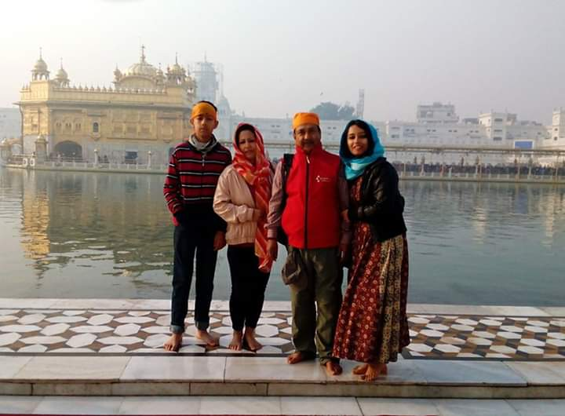
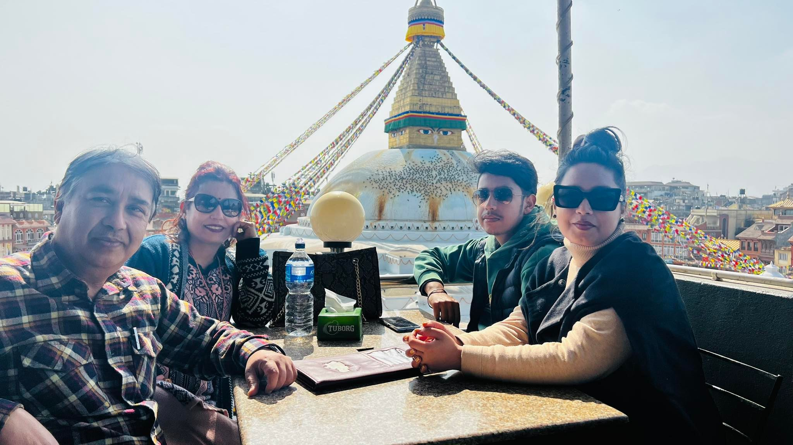

Let me introduce you to my amazing family! We are a cheerful bunch of four. First, there's me, the energetic and curious individual who loves exploring new things and engaging in creative endeavors. I find joy in learning and discovering, always eager to expand my horizons. My father is the backbone of our family's livelihood as he works in the exciting field of tourism. He is a dynamic entrepreneur who handles his own business in the tourism sector. With his passion for travel and deep knowledge of different destinations, he creates memorable experiences for travelers from all around the world. His enthusiasm and dedication to his work inspire me every day. Next, we have my loving and caring mother, the heart of our family. She is a dedicated housewife who manages our household with grace and warmth. Her love for cooking fills our home with delicious aromas, and she always ensures that everyone is well-fed and content. She has a nurturing spirit, offering unwavering support and guidance to each of us. Her kindness and compassion make her the pillar of our family. Completing our family is my sister, who has recently embarked on a new chapter of her life. She completed her studies in Delhi, India, where she pursued her academic interests and developed a strong foundation of knowledge. With her hard work and determination, she successfully achieved her educational goals. Recently, she got married, marking a significant milestone in her life. We are thrilled for her and excited to see her blossom in this new phase, and we wish her a lifetime of happiness and fulfillment. As a family, we value love, unity, and laughter. We support and encourage each other through thick and thin, cherishing the bond that ties us together. Our home is filled with warmth, laughter, and lively conversations. Whether we're sharing meals, embarking on family adventures, or simply spending quality time together, our love and companionship create a nurturing environment for each of us to thrive Together, we make cherished memories, support one another, and create a loving and joyful atmosphere. I feel blessed to be a part of this wonderful family, where each member contributes their unique qualities to make our lives truly special.